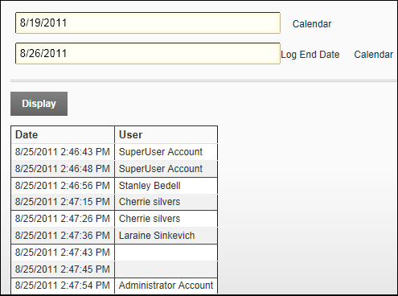

Viewing a Link Log Report
How to view details of links which are logged using the Link Control.
- Go to the Edit page associated with the logged link. E.g. Click the Edit button beside the item which may be an announcement, a link, etc.
- At Log Start Date the first day of the current week is displayed. To choose a different start date click the Calendar link and select a new date. See "Working with the Calendar"
- At Log End Date the last day of the current week is displayed. To choose a different end date, click the Calendar link and select a new date.

- Click the Display link.